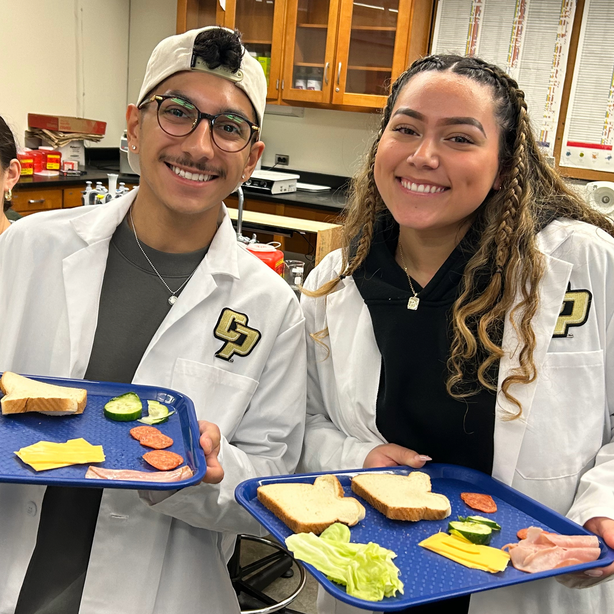
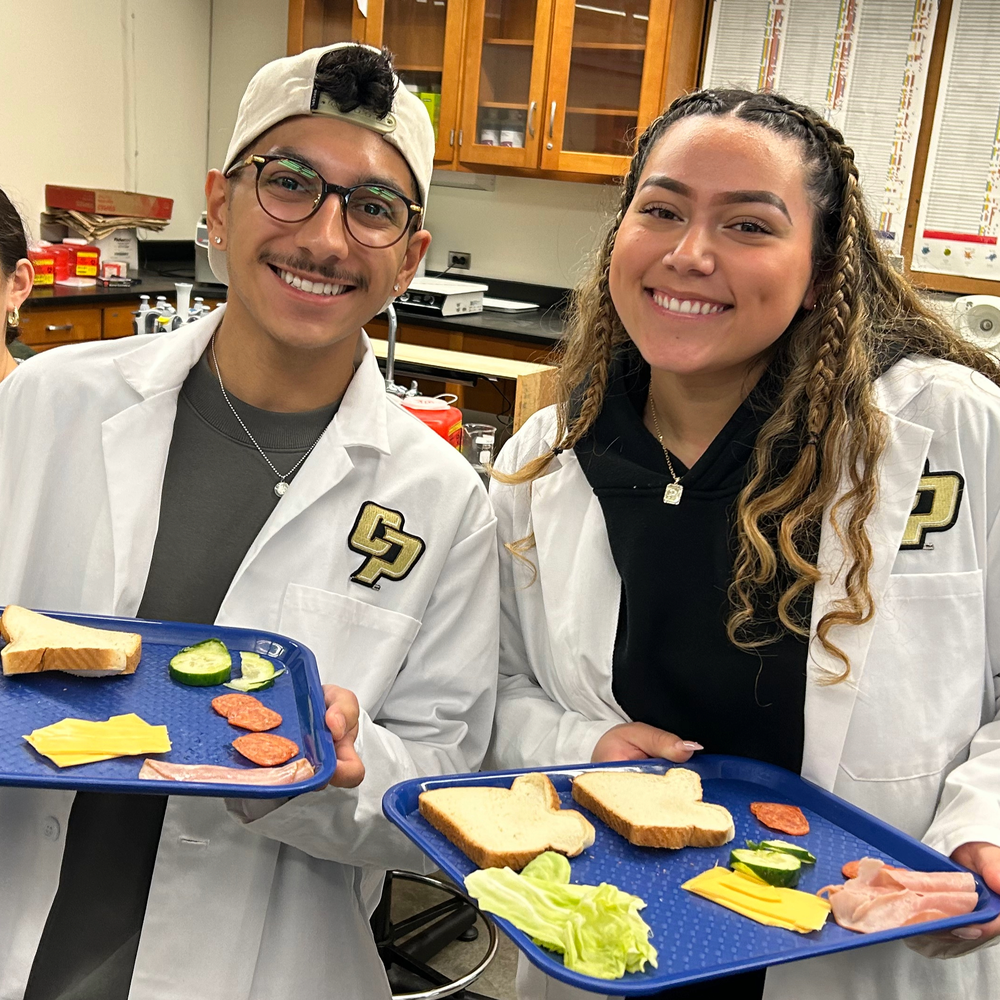
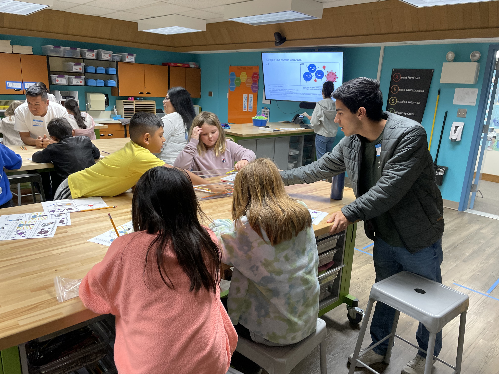
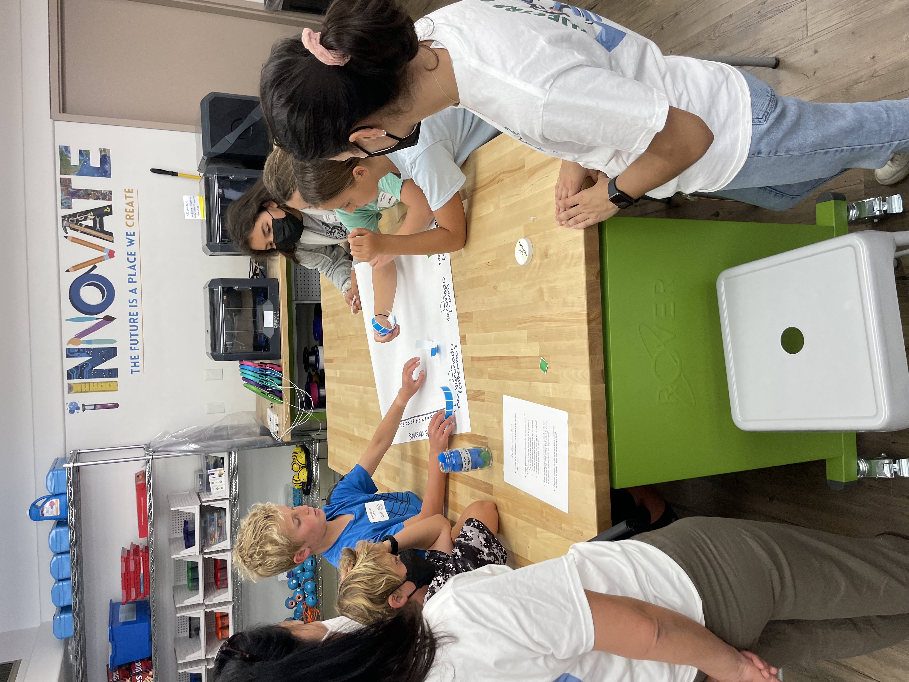
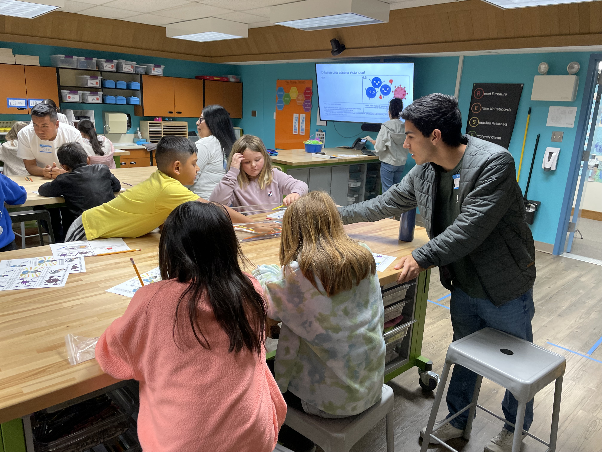
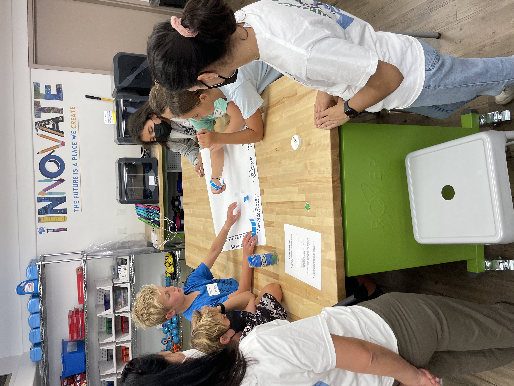

Our Activities
Bilingual, hands-on, and grounded in research—our activities inspire future scientists every step of the way.
2025: Señor Levadura


In the activity Señor Levadura ('Mr. Yeast’), students explored variables linked to ideal yeast growth and carbon dioxide production, experimenting with nutritional source, temperature, pH, and water. We helped students understand that microbes are living organisms that can have both positive and negative effects during food preparation. The experiment begins by dividing the students into four groups (temperature, beneficial environment, acidity, and nutrients). Each of these four groups tests specific conditions for yeast. For example, the acidity group focuses on what acidic conditions yeast grows in the best. First, three test tubes are filled with water, yeast, and sugar. Then, in one tube, vinegar is added to create an acidic environment and in another, baking soda is added to create a basic environment. Once the students have added each of the ingredients, they shake the tubes thoroughly to mix and then place a balloon on top of the test tube. Because yeast releases CO2 as it grows, the balloons inflate the most over the ideal conditions for the yeast. Through experimentation, the class learns that yeast prefer an environment of yeast, sugar, and warm water. This discovery sparks a discussion about living, beneficial bacteria that are present in many of our favorite foods from bread, to soy sauce, cheese, chocolate, and more!
2024-25: Misterio En La Cocina


 

Misterio en la Cocina ('The Kitchen Mystery') is one of two Nuestra Ciencia lessons focused on food safety. The lesson demonstrates the danger of cross contamination and highlights the importance of hand washing. Students begin the activity by forming groups of 4-5 students. Then, each student chooses a color (purple, orange, pink, blue, or yellow) and an ingredient (bread, lettuce, ham, cheese, or cucumber). All students, regardless of color receive lotion to then apply on their hands. However, the student who chose purple receives lotion with GlowGerm, a UV light responsive substance, mixed in. GlowGerm represents contamination in the experiment. Each student then receives their ingredient(s). In assembly line fashion, the students build a sandwich, placing one ingredient on top of one another, and after it is completed, the UV lights are turned on and the students begin examining their sandwich. The ingredient that was touched by the student with GlowGerm will light up bright blue, along with the neighboring ingredients that touched the “contaminated” ingredient. Students are able to see that if one ingredient is contaminated, other ingredients can easily become contaminated with bacteria/germs too! Students then participate in a discussion with their facilitators about ways in which our hands and our food can become contaminated and what we can do as good scientists (and healthy humans) to prevent food contamination.
2024: Cuatro Pasos


Cuatro Pasos, ('Four Steps to Food Safety') was a stations activity where each class was split into mini groups of six kids that rotated throughout four stations, learning a different lesson related to food safety at each one. Station one, or “Limpiar” is about learning the importance of cleaning your hands in the kitchen. The students were shown a bowl of water sprinkled with cinnamon, and observed as a Q-tip was dipped into the water, which the Q-tip then absorbs. After that, a new Q-tip is covered in soap, and then the cotton is submerged into the cinnamon water. The students’ takeaway is that soap repels the germs on your hands, in this case represented by the cinnamon atop the water. Next, they move to ‘Separar’ (separate), where they learn the importance of ensuring that their food doesn’t touch other, more transmissible food. They all sit in front of a microscope, and are asked to make observations about the bacteria colonies sitting on top of cheese. They are given 3 possible conditions (floor, raw chicken, none) that the cheese has been exposed to and then have to match based on the amount of bacteria they see. Then, they move to ‘Cocinar’ (Cook) where they’re taught that adequately high temperatures can kill bacteria. To do this, we assign one student to each scenario- freezer, room temperature, hot day, and boiling. Each scenario has a sound associated with it, and they’re asked to put their sticker on the laminated chicken each time they hear their sound (prerecorded video). The results show them that since no sound comes for the boiling scenario, bacteria can live at most temperatures until it’s too hot. Finally, they moved to Enfriar (freeze), which tells students the importance of keeping things in a freezer. They help us put laminated pictures of strawberries (which were left at room temp and are getting progressively moldier) on the board. Then, they compare that to pictures of a different strawberry that was left for the same amount of time but in the fridge. As they make their observations, they should notice that the strawberry from the fridge molds at a slower rate, which should help them understand that you need cold temperatures to slow microbial growth.
2021-23: Disease Transmission and Prevention
 



The Nuestra Ciencia: Disease Transmission and Prevention unit introduces 3rd–6th grade students to vaccines and herd immunity through hands-on, bilingual lessons that connect science, math, and real-world relevance. The unit includes four activities: learning how vaccines protect individuals, exploring herd immunity through the story of a child named Pepe, a physical simulation game, and a graphing activity to analyze results. In the outdoor simulation, students participate in a safe, dodgeball-style game modeling how viruses spread through communities with different vaccination rates. Facilitators introduce Pepe and explain how some individuals—like him—cannot be vaccinated and rely on others for protection. Students represent vaccinated and unvaccinated people: unvaccinated students cross their arms and can’t block Koosh balls (representing the virus), while vaccinated students can. If hit, unvaccinated students move to a red zone and receive a red pom pom to symbolize infection. Each round shows a new scenario with increasing vaccination coverage. Colored visuals (red, blue, green) help represent different health outcomes, and music signals the start and end of each round. The activity ends with a class discussion about how vaccines help protect the whole community—including those who are most vulnerable.
2021: Botanical Garden
Nuestra Ciencia's Botanical Garden lesson introduces students to the different ways plants defend themselves from threats like pathogens, herbivores, and environmental stressors. Through four interactive stations, students explore how plants survive without a circulatory system or adaptive immune system like humans. At Station 1, students learn that plants use a vascular system—xylem and phloem—instead of blood, and defend themselves with strong cell walls and the ability to isolate infections by killing infected cells. Station 2 explores how plants protect themselves from herbivores using physical barriers like thorns and chemical defenses. Station 3 focuses on plant responses to microbes, such as producing antimicrobial chemicals and physical barriers like waxy cuticles and bark. Students observe and touch real plant samples to identify these traits. Finally, Station 4 discusses how plants endure environmental stress like sun, drought, or fire through structural adaptations and resilience strategies. Each station includes guiding questions to encourage curiosity, critical thinking, and connections to how humans benefit from plant defense systems (e.g., medicines). This hands-on experience helps students understand that although plants are rooted in place, they are anything but defenseless.